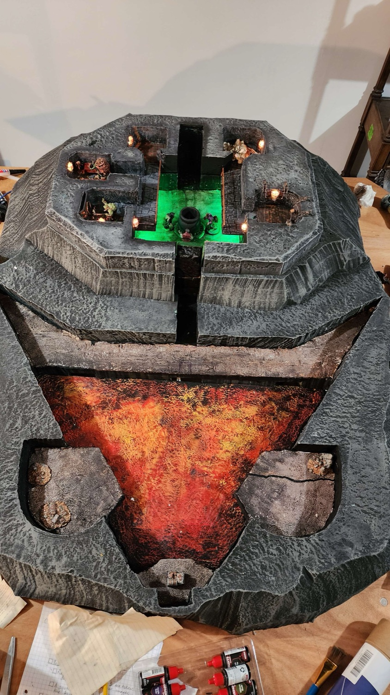
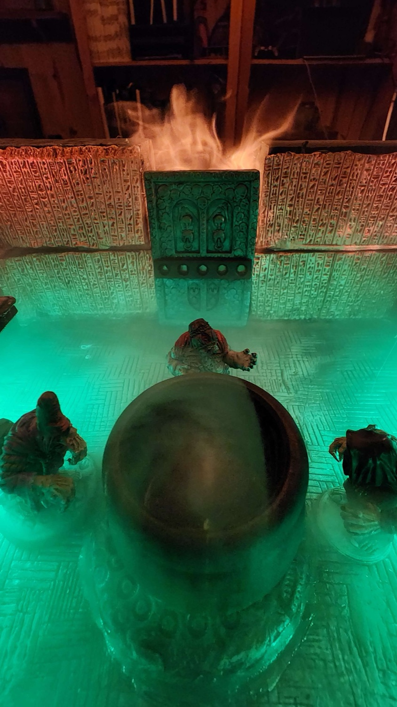
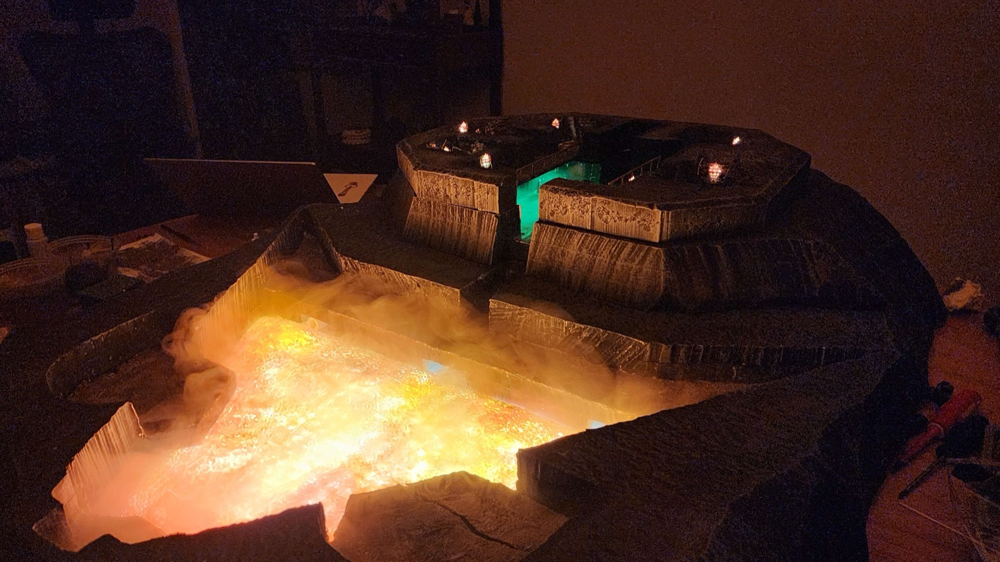
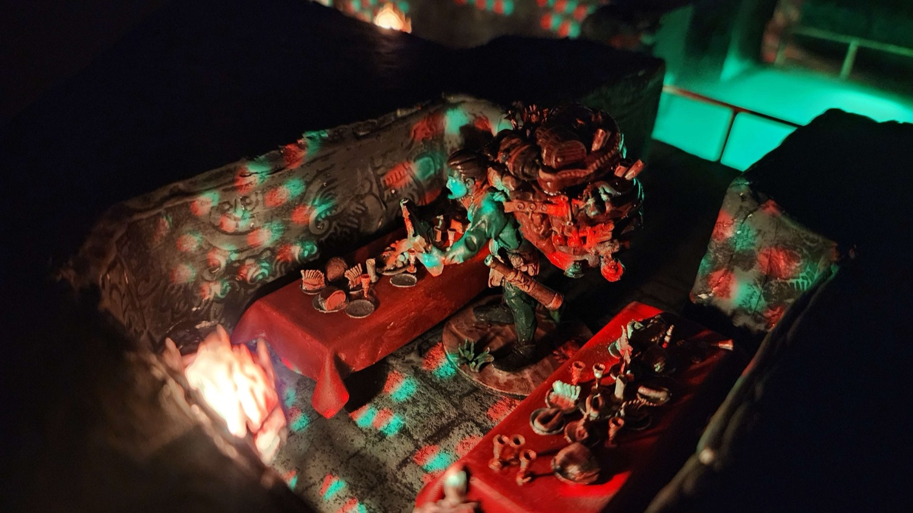
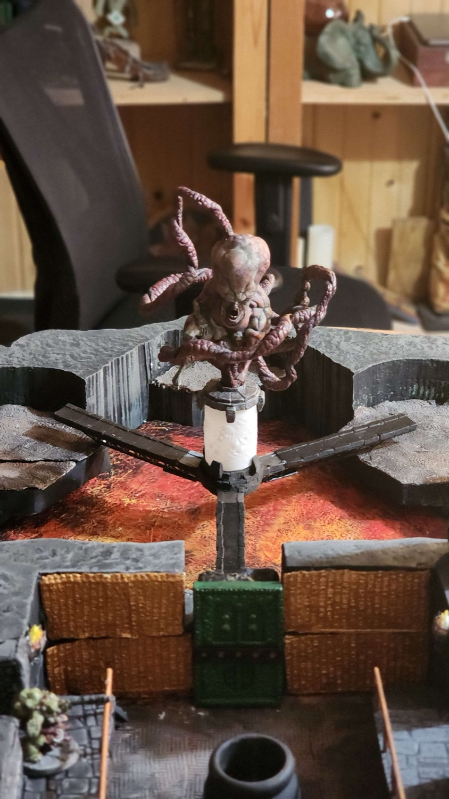
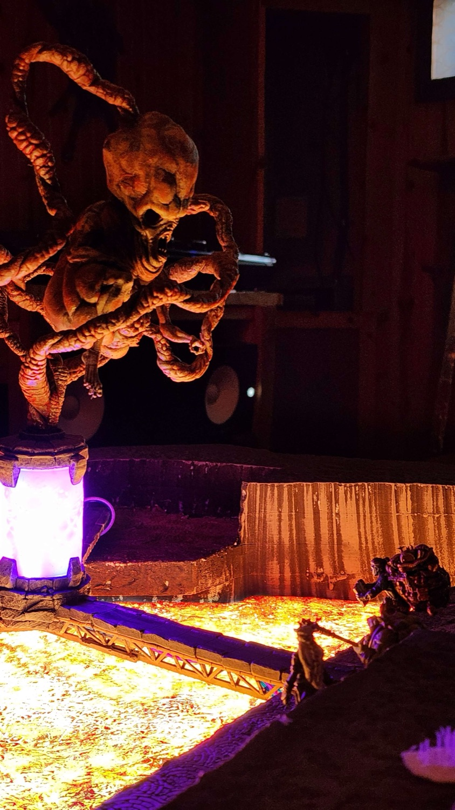

The Tomb
Battle Map
A tiered tabletop battle map for the finale of a D&D campaign — carved from foam, painted, and wired with three independent addressable LED circuits that never quite repeat themselves.
- Built
- March 2025
- Structure
- Carved & painted foam
- Electronics
- Arduino · FastLED · WS2812
- Lighting
- 82 addressable LEDs, 3 circuits
- Frame rate
- ~50 fps (20 ms loop)

What it's for
Tabletop terrain is usually static. You put a printed mat down, you put some rocks on it, and everyone imagines the rest. The point of this build was to make the table do some of the imagining — to have the light actually move, the torches actually gutter, and the shrine glow like something is wrong with it.
It was made for one night: the last encounter of a long campaign. Everything about the layout is in service of that fight — a raised shrine platform where the ritual happens, a lava basin below it that players have to cross, torch-lit alcoves for the things waiting in them, and a narrow bridge that turns the whole thing into a choke point.

Three circuits, not one
The obvious build is one long strip and one array. I split it into three, on three pins, because the effects have nothing to do with each other and I did not want to spend the rest of the project doing index arithmetic to keep them apart:
// Three strips, three arrays, three completely separate jobs. #define LED_PIN 6 // main strip — drifting blue/purple #define ROOM_PIN 5 // torches #define SPOOKY_PIN 4 // the shrine #define NUM_LEDS 72 #define NUM_TORCHES 4 #define NUM_SPOOKY_LEDS 6 // two groups of three FastLED.addLeds<WS2812, LED_PIN, GRB>(mainLeds, NUM_LEDS); FastLED.addLeds<WS2812, ROOM_PIN, GRB>(torchLeds, NUM_TORCHES); FastLED.addLeds<WS2812, SPOOKY_PIN, GRB>(spookyLeds, NUM_SPOOKY_LEDS);
Each array gets its own update function, they all write into their own buffer, and a single
FastLED.show() pushes everything at once. Adding a fourth effect later meant
adding a pin and a function, not rewriting the loop.
Making light look alive
The whole trick with this kind of lighting is that anything perfectly periodic reads as fake within about ten seconds. All three effects are built to avoid settling.
The main strip
Seventy-two LEDs running a sine wave across their own length, offset by a hue that creeps forward one step every frame. The hue is clamped to a narrow band so it wanders through blues and purples and never cycles further — a full rainbow sweep would read as a party light. It is the cold ambient the warm sources get to play against.
uint8_t hue = 160 + (sin8(i * 255 / NUM_LEDS + baseHue) >> 2);
mainLeds[i] = CHSV(hue, 255, 255); // ~160-200: blue through purple
The torches
No wave at all — every torch picks a fresh random brightness and a fresh warm hue on every single frame. At 50 frames a second that reads as a proper flicker. The ranges are narrow on purpose: brightness never drops below 200, so a torch never actually appears to go out, and the hue stays in the orange band.
uint8_t brightness = random(200, 250); torchLeds[i] = CHSV(random(20, 40), 255, brightness);
The shrine
Six LEDs in two groups of three. Each group runs its own small gradient, and the base hue advances by a random one or two steps per frame instead of a fixed one — so the two groups slide out of phase with each other and never resynchronise. The hue is hard-constrained to a ten-degree window, because green is the one colour where a few degrees of drift stops looking sickly and starts looking like a Christmas light.
hue = constrain(hue, 85, 95); // a narrow, ugly green spookyLeds[i] = CHSV(hue, 255, random(100, 120)); // dim, and breathing
Every one of those magic numbers is a number I got wrong first. The original torch range went down to zero brightness and the torches looked like they were short-circuiting. The shrine was unconstrained and drifted into mint. You do not find these values on paper — you find them by putting the thing on a table in a dark room and staring at it.





What I'd carry forward
- Separate pins per effect cost nothing and saved the entire project from index arithmetic. I would do this again on a strip a tenth of the size.
- Constrain your hue ranges early. Almost every effect that looked cheap looked cheap because the colour was allowed to wander too far.
- Randomness per frame beats a clever waveform for anything that is supposed to be fire.
- Build it, then light it, then tune it in the dark. The numbers that work under a workshop light are not the numbers that work at the table.